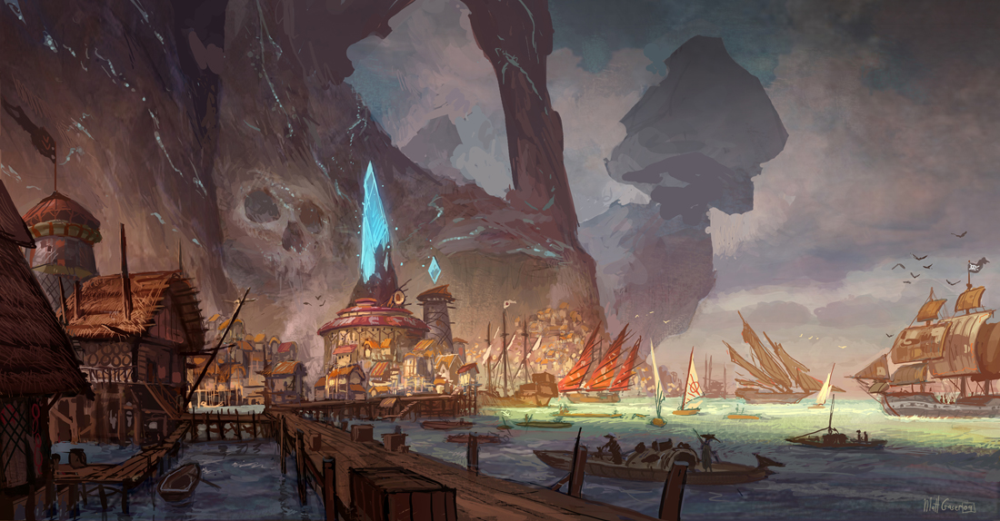

back
Sharktown

Sharktown is a city for bandits and pirate to meet and discuss where they will plunder their next victims. The city is built on top of the hill overlooking Shark's Bay and it has a series of long tunnels that go all the way to sea level where a port is located for ships to bring in cargo and gold. The town is not really regulated by any organization, it is a free for all where the strong thrive and the idiot drowns. You can find all kind of people there and it is very frequent to see someone getting killed because he looked at someone wrong. You can find some of the best sailor of the continent in this town.